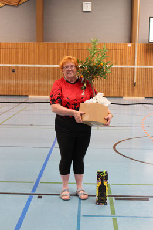
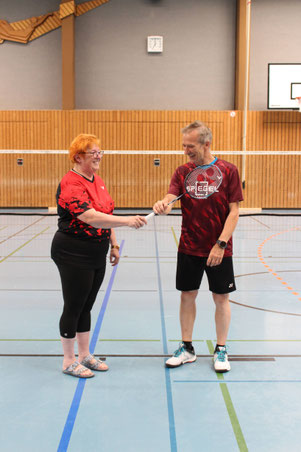

    <div class="container page-body">
      <div class="layout">
        <div>
          <p>
            Renate und Fred waren lange Zeit unsere Jugendtrainer. Beide mussten leider aus
            privaten Gründen ihre Trainertätigkeit bei uns niederlegen. Renate (und auch Fred)
            wurden am letzten Trainingsabend vor den Sommerferien feierlich von uns
            verabschiedet. Ein riesiges Dankeschön an Renate und Fred 🙂
          </p>
          <p>
            Die Spielgemeinschaft mit der TSG Grünstadt im Kinder- und Jugendbereich bleibt
            weiterhin bestehen und wird in der kommenden Saison wieder in der Staffel 3 U15
            aufschlagen.
          </p>

          <figure style="max-width:360px; margin: 1.5rem 0;">
            
          </figure>

          <p>
            Nach der Entscheidung von Renate und Fred, das Jugendtraining beim TSV Eppstein
            nach den Sommerferien zu beenden, sind wir auf die Suche nach einem
            Jugendtrainer/einer Jugendtrainerin gegangen.
          </p>
          <p>
            Aus unserer Abteilung meldete sich Arthur Paszek (C-Trainer) und wir waren alle
            sehr glücklich darüber, dass er das Jugendtraining übernehmen möchte. Nach den
            Sommerferien startet das Jugendtraining wieder wie gewohnt um 17 Uhr mit Arthur.
            Vielen Dank Arthur 🙂 Wir freuen uns!
          </p>

          <figure style="max-width:360px; margin: 1.5rem 0;">
            
          </figure>
        </div>

        {% include sidebar-trainingszeiten.html %}
      </div>
    </div>
  
